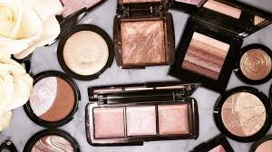

Super Glam Makeup Tutorial
Steps:
- fill in brows
- do eyeshadow
- apply primer
- apply foundation and concealer
- contour
- bake and highlight
- apply lipstick
- set face
Products Used:
- Covergirl Ready Set Gorgeous Concealer - Fair
- BH Cosmetics Carli Bybel Palette *Deluxe Edition*
- Tarte Cosmetics Clay Matte Palette
- Holy Glitter Loose Glitter - Silver Sparkle
- Bold Face Lashes - It’s go Time
- Tarte ‘Gifted’ Mascara
- Nyx Cosmetics Matte Liquid Liner
- Becca Cosmetics Velvet Blurring Primer
- Becca Cosmetics Ultimate Coverage Foundation - Driftwood
- LA Girl Pro Coverage Liquid Foundation - White
- Tarte Cosmetics Shape Tape Concealer - Fair
- Coty Airspun Loose Face Powder - Translucent
- Morphe 9C Highlight/Contour Palette
- ELF Cosmetics Blush Palette - Light
- Cover FX Custom Enhancer Drops - Celestial
- Anastasia Beverly Hills Nicole Guerriero Glow Kit - Forever young + Forever Lit
- MAC Cosmetics Lip Liner - Nightmoth
- MAC Cosmetics Retro Matte Liquid Lipstick - High Drama
